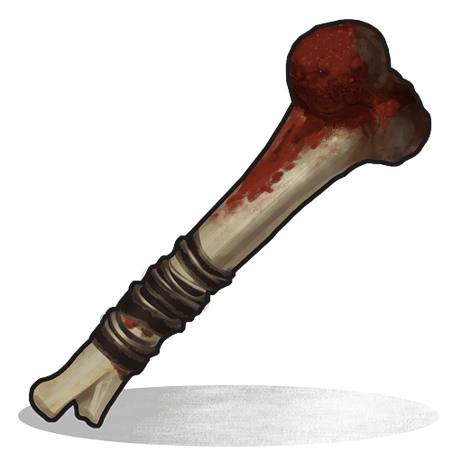

武器&弾
| アイコン | 名前 | 弾薬数 | 弾薬 | 詳細 |
|---|---|---|---|---|
 |
M249 | 100 | 5.56mm | 非常に高火力で超遠距離以外に向いている |
 |
アサルトライフル | 30 | 5.56mm | 通称AK。高火力だがリコイル(発砲時の反動)が激しく扱いに慣れる必要がある。近・中距離向け。 |
| LR-300 | 30 | 5.56mm | M4タイプのアサルトライフル、なかなかの威力と低いリコイルで扱いやすい。近・中距離向け | |
| ボルトアクション式ライフル | 4 | 5.56mm | 精度と飛距離、威力が非常に高く、ヘッドショットは即死級のダメージとなる。ただしボルトアクションのため1発1発しか打てない。遠距離に強い。 | |
 |
L96 Rifle | 5 | 5.56mm | ボルトアクションライフルよりも射程距離が長く弾道が落ちにくいスナイパーライフル。ただしコッキング時間が長いのが欠点。 |
| セミオートライフル | 16 | 5.56mm | セミオート式のライフル。アイアンサイトが見ずらい。中・近距離向け | |
| M39 Rifle | 20 | 5.56mm | 軍用セミオートライフル。射程とダメージが従来のセミオートライフルよりも高いが1発の反動が少し高い | |
| カスタムSMG | 24 | ピストル弾 | 非常に高い連射力を誇る。ただし中距離以降から精度が愕然と落ちる。中・近距離向け | |
| トンプソン | 20 | ピストル弾 | リコイルが小さく、扱いやすい。アップデートによりレーザーサイト、フラッシュライトはつけれる用になった。中・近距離向け | |
| MP5A4 | 30 | ピストル弾 | まずまずの連射力を持つ銃。ただし、ダメージはトンプソンよりやや低い | |
 |
セミオート式ピストル | 10 | ピストル弾 | ピストルだが、精度がそれなりにある。連射もしやすい。やや中・近距離向け |
 |
M92ピストル | 15 | ピストル弾 | 通常ドロップおよびクラフトできないアイテムだが威力はセミオートピストルよりは上 |
 |
マグナムリボルバー | 6 | ピストル弾 | ピストル系では最強。タレットに装着すると真価を発揮する |
 |
リボルバー | 8 | ピストル弾 | 8連発式の銃。威力はそこそこ。近距離向け |
 |
ロケットランチャー | 1 | ロケット弾 | ロケット弾による広範囲にダメージを与えることが可能。拠点破壊や焼夷弾を使った防衛用と用途は様々。中・遠距離向け |
| グレネードランチャー | 6 | グレネード弾 | グレネード弾による広範囲にダメージを与えることが可能。拠点破壊やスモーク弾を使った防衛用と用途は様々。弾はバウンドしない。中距離向け | |
 |
Spas-12 ショットガン | 6 | 12ゲージ＆手作りの散弾 | サイティングしたまま連射が可能なショットガン |
| ポンプアクション式ショットガン | 6 | 12ゲージ＆手作りの散弾 | 連射できるショットガン。近距離に絶大な効果を誇る。 | |
 |
ダブルバレルショットガン | 2 | 12ゲージ＆手作りの散弾 | 2重装のショットガン、セミオート式だがリロードに時間がかかる。 |
 |
水道管のショットガン | 1 | 12ゲージ＆手作りの散弾 | 1発ずつしか打てないのでここぞ！というときには役に立つ。遠征とかに非常用として持ってくのもよい。近距離向け |
 |
エオカピストル | 1 | 手作りの散弾 | これも1発ずつしか打てないが、打つのに時間がかかる。ピストルなのにショットガンの弾しか使えない。近距離向け |
| 火炎放射器 | 100 | 低質燃料 | 燃えやすいものを燃やすのに最適だが、それ以外や対人にはほとんど向かない。 | |
 |
ネイルガン | 16 | ネイルガン | 近距離にしか適さず、弾速も遅い。ダメージも弱いためあくまでほぼ序盤専用の銃 |
| ウォーターガン | 1,000ml | 水 | ※DLC「Rust - Sunburn Pack」を所持していないとクラフト不可能 |
|
 |
水鉄砲 | 250ml | 水 | ※DLC「Rust - Sunburn Pack」を所持していないとクラフト不可能 |
| スノーボールガン | 50 | 雪玉 | ※DLC「Rust - Sunburn Pack」を所持していないとクラフト不可能 |
近接・その他の武器
| アイコン | 名前 | 修理 | 詳細 |
|---|---|---|---|
| F1グレネード | × | 投げる爆発物。投げたら確実に爆発する。現在、建築物へのダメージは無効 | |
 |
豆間グレネード | × | 投げたら爆発するかしないかの50%爆発物。 |
 |
強化弓 | 〇 | 弓と違い溜めて飛距離を伸ばすことができる弓矢 |
| ボウガン | 〇 | リロードは長いが弓よりもダメージを与えることができる。またアタッチメントも付けられる。 | |
| 弓 | 〇 | 一般的な飛び道具。軽装備としても向いている。リロードも短い。 | |
 |
木の槍 | 〇 | 近接武器、やり投げ選手のように投げて当てることが可能。 |
 |
石の槍 | 〇 | 木の槍よりも強いが、強さがずば抜けてるため、当たり所が悪いと即死級ダメージが入る。もしかするとボウガンよりも強いかも |
| パドル | 〇 | 殴ってより、投げてよし、漕いでよしと少し汎用性があるパドル | |
| メイス | 〇 | 当たり判定がそこそこ広い武器 | |
 |
コンバットナイフ | 〇 | 死骸処理や格闘に最適。それ以外の用途に使うと耐久がかなり減る。 |
 |
ロングソード | 〇 | メイスほどの当たり判定はないが威力はそこそこ |
| 廃材の包丁 | 〇 | 性能はメイスとあまり変わらない。ドラム缶を一撃で割れる | |
 |
廃材の剣 | 〇 | 耐久が高いためドラム缶の破壊等に適してる |
| ナタ | 〇 | 廃材の剣同様、耐久が低いものを壊すのに適している | |
| 骨製のナイフ | 〇 | 素早い攻撃が可能。死骸処理に向いてる | |
|  | 骨のこんぼう | × | ダメージはそこそこ。壊れると消滅するため、敵拠点を落とす時とかに使われる。 |
 |
ブッチャーナイフ | 〇 | ハロウィン時に入手可能な武器で、一般入手は不可 |
| 熊手 | 〇 | ハロウィン時に入手可能な武器で、一般入手は不可 |
弾
| アイコン | 名前 | 詳細 |
|---|---|---|
| 5.56mmライフル弾 | ライフル専用の弾 | |
| 5.56mmライフル弾(高速) | 通常弾よりも早く飛び、精度もやや高い。ダメージは即死級？ | |
 |
5.56mmライフル弾(焼夷) | 着弾時にたまに発火するライフル弾。弾速が遅いがダメージはそこそこ高い。 |
 |
5.56mmライフル弾(炸裂) | 着弾時に爆発するライフル弾。周りにもダメージが入るため、足元に打つとややダメージが入る。 |
| ピストル弾 | ピストル専用の弾。 | |
 |
ピストル弾(高速) | 通常よりも早く飛び精度がやや上がる。ダメージもやや高い |
| ピストル弾(焼夷) | 着弾時にたまに発火し炎症ダメージを与える。弾速が遅い。 | |
 |
ロケット弾 | 通常のロケットランチャーの弾。周りにもダメージが入る。 |
| ロケット弾(高速) | 通常弾よりも早く飛び、飛距離がやや長いがダメージが低い。 | |
| ロケット弾(焼夷) | 弾速がとても遅いが着弾すると周りに発火する。拠点防衛でかなり役に立つ。 | |
 |
発煙ロケット弾 | 着弾時に煙幕が発生するが、今現在では打てるが未完成状態。サーバー管理者権限でゲットできます。レシピも存在します。 |
 |
SAM | 地対空ミサイルの弾薬。標的を自動追尾する機能を備えているが、使用するには専用のSAMタレットへの装填が必要 |
| 40mm HEグレネード弾 | グレネードランチャーの弾。周りにもダメージが入る。 | |
| 40mm ショットガン弾 | グレネードランチャーの弾。ショットガンの弾とほぼ同じ。 | |
 |
40mm スモークグレネード弾 | グレネードランチャーの弾。周りにはダメージが入らず、スモークが出るだけ。 |
| 手作りの散弾 | 低コストだが、速度が遅く威力が弱い。 | |
 |
12ゲージ散弾 | ショットガン用の一般的な弾。 |
| 12ゲージスラグ弾 | 散弾ではなく単発の弾丸が出るショットガン。単発なので命中率に欠ける。 | |
| 12ゲージ焼夷弾 | 発砲時に火花と付近を炎上させることができる弾 | |
| 木の矢 | 弓やボウガン用の一般的な矢。 | |
| 高速矢 | ダメージ量を犠牲にする代わりに速度と飛距離を上げる。 | |
| 骨の矢 | 高速矢よりは射程は劣るがヒットしやすい | |
 |
火の矢 | 弾頭が炎上しており、着弾点を炎上させる能力がある |
 |
ネイルガンの釘 | ネイルガン専用の弾。他には使えない |